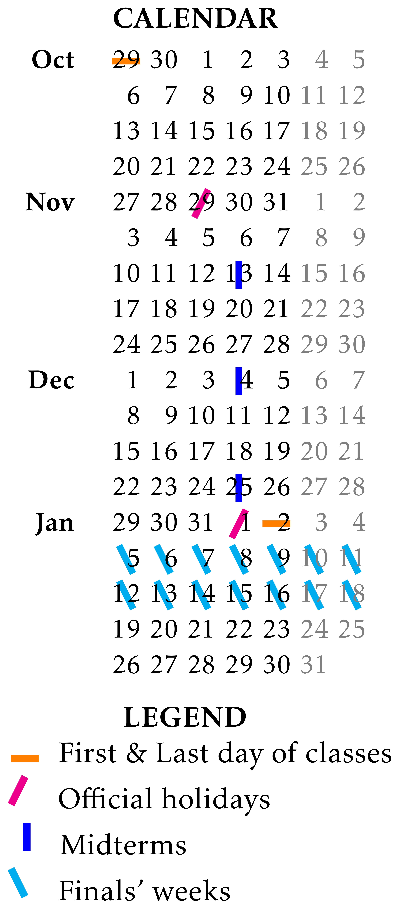

The overall score for the course is calculated with the following algorithm:

This page is temporary, informal, and should not be consulted for any reason!
For a formal answer to this question, see
and
More informally, Phys331 introduces the concepts of electrostatics and magnetostatics, and expands on how one can mathematically model (and, if posible, analytically understand) these natural phenomena. Phys332 then builds on these to introduce electrodynamics with which one extends to advanced topics such as electromagnetic waves, radiation, and special theory of relativity.
This is a must course for any undergraduate student in the department of Physics (see the curriculum). Assuming that you have taken a sufficient set of prerequisite courses (see Phys331 and Phys332), you should take these courses too.
I am teaching Phys331 in this semester (20251) and the classes are as follows:
| Wednesday | 10:40-12:30 | — U1 |
| Friday | 10:40-12:30 | — U1 |
See here for the location of classrooms!
The overall score for the course is calculated with the following algorithm:
_____________________________________
Phys209
_____________________________________
(1) Definition and Classification of Differential Equations: ordinary vs partial, linear vs non-linear, homogeneous vs non-homogeneous, order vs order vs order vs
(2) Linear equations with constant coefficients: Their relevance in physics and engineering, principle of superposition, characteristic equation, repeated roots, formal solution for both homogeneous and nonhomogeneous cases, initial and boundary value problems, the impulse response, the Laplace transform, convolution
(3) Linear equations with functional coefficients:
(4) Systems of first order linear differential equations: Conversion of arbitrary linear ordinary differential equations to systems of first order linear differential equations, analysis of coupled systems via matrix differential equations, phase space, formal solutions (Volterra integral equation, Dyson series)
(5) Eigensystems and Sturm-Liouville theory: Matrix diagonalization, normal modes, eigenvalues and eigenfunctions, Sturm-Liouville type differential equations and their solutions
(6) Beyond linear ordinary differential equations:
_____________________________________
Phys210
_____________________________________
(1) Functions of a complex variable: analysis of complex numbers as a two dimensional real vector space (complex plane, geometric interpretations, polar form), algebraic properties of complex numbers, series expansions, analyticity of complex functions, complex differentiation & integration
(2) Complex Analysis: Riemann sphere, Riemann surfaces, inner product between complex functions, Fourier analysis, analytic continuation
(3) Definition and Fundamentals of Vector Spaces: basics of linear algebra and linear spaces, norms and inner product spaces, tensor algebras over fields
(4) Curvilinear Coordinate Transformations: coordinate charts, common orthogonal curvilinear coordinates (polar, cylindrical, spherical)
(5) Differentiation in Vector calculus: vector fields in Euclidean spaces, differentiation of vector fields (grad, div, curl, Laplacian), Helmholtz decomposition of vector fields
(6) Integration in Vector calculus: curves and line integrals, Frenet–Serret formulas, integral theorems (gradient theorem, divergence theorem, curl theorem, and Green’s theorem)

{kind=link}